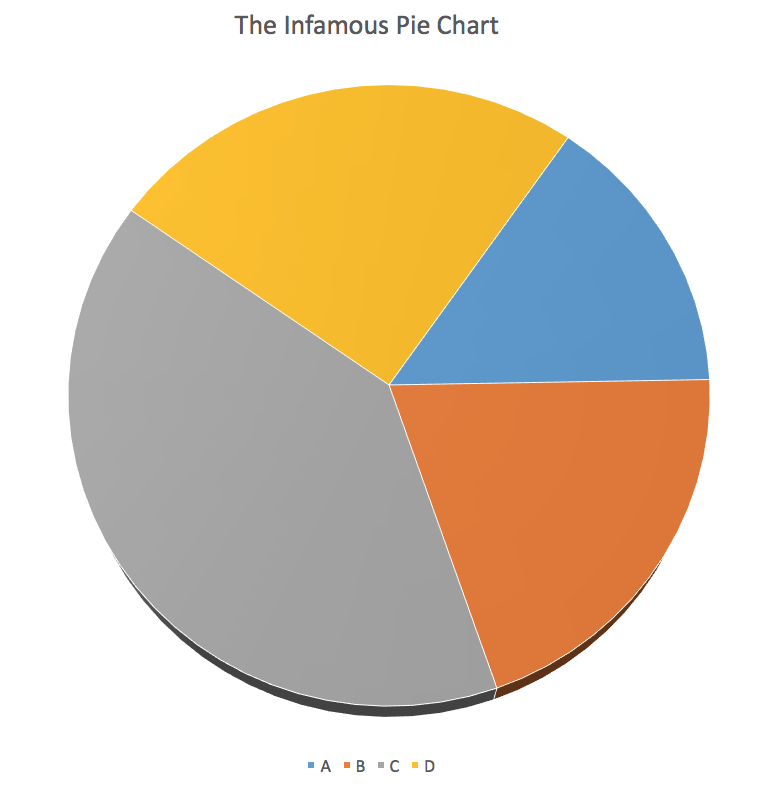

Outline for Today
- Housekeeping
- Motivation and Goals
- Up and running with R and RStudio
- What we are Good and Bad at Seeing
- A First Figure in R
Kieran Healy
Duke University
## This is a comment
data <- c(1, 1, 4, 1, 1, 4, 1)
data
## [1] 1 1 4 1 1 4 1
week-01-notes.Rmd..r file. Very large projects may need more organization. 
## Get the working directory
getwd()
## [1] "/Users/kjhealy/Documents/courses/graduate/soc880/week-01"


FALSE and TRUE, logical operators and programming words like Inf, for, else, break, function, and words for special entities like NA and NaN.q or c or mean, or pi, or range, or var.## This is a vector of numbers
my_numbers <- c(1, 2, 3, 1, 3, 5, 25)
my_numbers
## [1] 1 2 3 1 3 5 25
summary(my_numbers)
## Min. 1st Qu. Median Mean 3rd Qu. Max.
## 1.000 1.500 3.000 5.714 4.000 25.000
class(my_numbers)
## [1] "numeric"
class(summary)
## [1] "function"
## A Function takes arguments inside parentheses
my_summary <- summary(my_numbers)
class(my_summary)
## [1] "summaryDefault" "table"
my_summary
## Min. 1st Qu. Median Mean 3rd Qu. Max.
## 1.000 1.500 3.000 5.714 4.000 25.000
my_numbers * 2
## [1] 2 4 6 2 6 10 50
table(my_numbers)
## my_numbers
## 1 2 3 5 25
## 2 1 2 1 1
sd(my_numbers)
## [1] 8.616153
class(my_numbers)
## [1] "numeric"
class(my_summary)
## [1] "summaryDefault" "table"
class(table)
## [1] "function"
str(my_numbers)
## num [1:7] 1 2 3 1 3 5 25
str(my_summary)
## Classes 'summaryDefault', 'table' Named num [1:6] 1 1.5 3 5.71 4 ...
## ..- attr(*, "names")= chr [1:6] "Min." "1st Qu." "Median" "Mean" ...
str(summary)
## function (object, ...)


##


Ew.


## Helper libraries give you new functions to use
library(devtools)
library(ggplot2)
## Put the url in an object
gapminder.url <- "https://raw.githubusercontent.com/socviz/soc880/master/data/gapminder.csv"
## What is it?
class(gapminder.url)
## [1] "character"
## Make a new object
## Notice how we are using more than one function here
data <- read.csv(url(gapminder.url))
## What's the class?
class(data)
## [1] "data.frame"
## What's inside?
str(data)
## 'data.frame': 1704 obs. of 6 variables:
## $ country : Factor w/ 142 levels "Afghanistan",..: 3 3 3 3 3 3 3 3 3 3 ...
## $ continent: Factor w/ 5 levels "Africa","Americas",..: 1 1 1 1 1 1 1 1 1 1 ...
## $ year : int 1952 1957 1962 1967 1972 1977 1982 1987 1992 1997 ...
## $ lifeExp : num 43.1 45.7 48.3 51.4 54.5 ...
## $ pop : num 9279525 10270856 11000948 12760499 14760787 ...
## $ gdpPercap: num 2449 3014 2551 3247 4183 ...
## Get the dimensions of the data frame
dim(data)
## [1] 1704 6
## Another way to look at a data frame
head(data)
## country continent year lifeExp pop gdpPercap
## 1 Algeria Africa 1952 43.077 9279525 2449.008
## 2 Algeria Africa 1957 45.685 10270856 3013.976
## 3 Algeria Africa 1962 48.303 11000948 2550.817
## 4 Algeria Africa 1967 51.407 12760499 3246.992
## 5 Algeria Africa 1972 54.518 14760787 4182.664
## 6 Algeria Africa 1977 58.014 17152804 4910.417
## Make an object containing the plot
## try str(p) if you like. Objects can be complex!
p <- ggplot(data,
aes(x = gdpPercap,
y = lifeExp))
## Take our data and make a scatter plot
p + geom_point()

lifeExp on the x-axis and gdpPercap on the y-axis.pop on the x-axis and gdpPercap on the y-axis.year on the x-axis and any continuous variable on the y-axis.